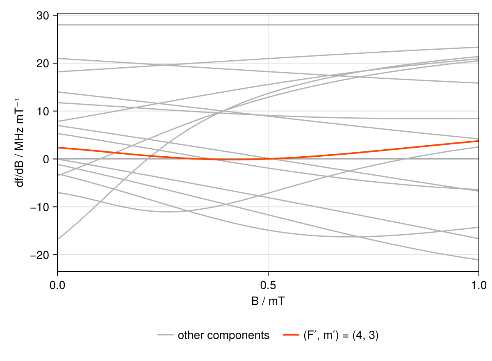
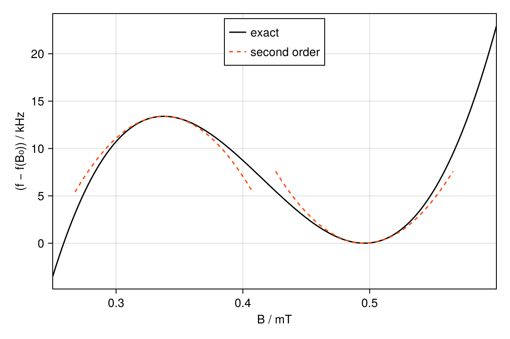

Field-insensitive 729 nm transitions of ⁴³Ca⁺
The components of the 729 nm S$_{1/2}$ ↔ D$_{5/2}$ quadrupole transition of ⁴³Ca⁺ (nuclear spin $I = 7/2$) connect sublevels whose energies depend on the magnetic field in different ways. Where the field derivatives of the two states match, a component is insensitive to field fluctuations to first order. In this example, we find the two field-independent points of $|S_{1/2}, F = 4, m_F = 4⟩ ↔ |D_{5/2}, F = 4, m_F = 3⟩$, as discussed by Benhelm et al. (2007), and the second-order field dependence that remains there.
The lower state is stretched: it is the product state $|m_J = 1/2, m_I = 7/2⟩$, whose energy is linear in the field, with a slope of about $μ_B/h = 14$ MHz/mT. The D$_{5/2}$ hyperfine intervals are only 7 to 26 MHz (against 3.2 GHz in the ground state), so a few tenths of a millitesla are enough to enter the intermediate-field regime on the way to $I$ and $J$ becoming decoupled there. Thus, the field sensitivities of most upper eigenstates change drastically with fields in that range, and can cross that of the ground state.
Sensitivity across the field
An Eigenstructure solves the hyperfine and Zeeman Hamiltonian of whole manifolds at one static field, labelling each eigenstate by the zero-field $(F, m_F)$ level it connects to adiabatically. zeeman_sensitivity gives the exact field derivative of a transition's angular frequency from these eigenstates. From the stretched $|S_{1/2}, F = 4, m_F = 4⟩$ state, there are 15 possible 729 nm quadrupole transitions ($|Δm| ≤ 2$) connecting it to D$_{5/2}$ states with $m_F' = 2, …, 6$:
using CairoMakie
using Levels
using PrettyTables
using Unitful
structure(B) = Eigenstructure(ca43, "S_1/2", "D_5/2"; B)
lower = StateSpec("S_1/2 F=4", 4)
clock = lower => StateSpec("D_5/2 F=4", 3)
uppers = [
StateSpec(level, m) for level in hyperfine_levels(ca43, "D_5/2") for
m in 2:6 if m ≤ level.f
]
# Levels.jl works in angular frequencies; we give field derivatives to cyclic
# frequencies.
to_cyclic(x) = x / (2π * u"rad")
fields = range(0, 1; length=101) .* u"mT"
slopes = stack(fields) do B
s = structure(B)
[ustrip(u"MHz/mT", to_cyclic(zeeman_sensitivity(s, lower => u))) for u in uppers]
end
fig = Figure(; size=(600, 440))
ax = Axis(fig[1, 1]; xlabel="B / mT", ylabel="df/dB / MHz mT⁻¹", yticks=-20:10:30)
tightlimits!(ax, Left(), Right())
hlines!(ax, 0; color=:black, linewidth=0.75)
# Grey lines for other transitions.
k = findfirst(==(clock.second), uppers)
for i in eachindex(uppers)
i == k && continue
label = i == 1 ? "other components" : nothing
lines!(ax, ustrip.(u"mT", fields), slopes[i, :]; color=:grey70, label)
end
# Orange-red line for chosen "clock" transition.
lines!(
ax,
ustrip.(u"mT", fields),
slopes[k, :];
color=:orangered,
linewidth=2,
label="(F′, m′) = (4, 3)",
)
Legend(fig[2, 1], ax; orientation=:horizontal, framevisible=false)
fig
The (6, 6) component connects two stretched states, so its sensitivity is constant; the others bend as the field breaks up the D$_{5/2}$ hyperfine coupling. Several cross zero steeply, while (4, 3) only grazes zero, crossing it near 0.34 mT and again near 0.50 mT.
Insensitive points
Given brackets read off the plot, insensitive_field refines both zeros by root finding on the exact zeeman_sensitivity:
B₁ = insensitive_field(ca43, clock, (0.30u"mT", 0.40u"mT"))
B₀ = insensitive_field(ca43, clock, (0.45u"mT", 0.55u"mT"))
round.(u"Gauss", (B₁, B₀); digits=4)(3.3766 Gauss, 4.9583 Gauss)These are the 3.38 G and 4.96 G of Benhelm et al.; we pick the higher of the two for the rest of this example.
Second-order field dependence
At these points the transition frequency $f$ depends on the field only quadratically. Levels.jl does not have a built-in function for obtaining the quadratic sensitivity, but we can easily evaluate it ourselves using perturbation theory.
The static field enters the Hamiltonian as $H(B) = H_\mathrm{hfs} + B M_z$, with $M_z$ the magnetic-moment operator along the quantisation axis, so a change of the field by $δB$ is the perturbation $δB\, M_z$. Thus, second-order perturbation theory gives:
\[\frac{d^2 E_k}{dB^2} = 2 \sum_{j \neq k} \frac{|\langle j | M_z | k \rangle|^2}{E_k - E_j}.\]
The diagonal elements $\langle k | M_z | k \rangle$ are the first derivatives that zeeman_sensitivity takes the difference of. zeeman_hamiltonian(s, b) returns $\vec b ⋅ \vec M$ in the field eigenbasis of the structure, indexed by Levels.basis like the energies from offsets. $M_z$ couples only states of equal $m_F$ within a manifold, so we can skip the vanishing elements (which also avoids having to deal with energy crossings):
function curvature(structure, state)
M_z = zeeman_hamiltonian(structure, [0, 0, 1]u"mT") / u"mT"
E = offsets(structure)
k = stateindex(Levels.basis(structure), state)
terms = (
2abs2(M_z[j, k]) / (E[k] - E[j]) for
j in eachindex(E) if j ≠ k && !iszero(M_z[j, k])
)
sum(terms; init=0.0u"rad/µs/mT^2")
end
curvature(structure(B₀), lower)0.0 rad μs^-1 mT^-2The stretched ground state has no partner of equal $m_F$, so its energy has no curvature, and that of the clock transition is that of its upper state alone. Taking into account the factor 1/2 in front of the second derivative in the quadratic $(B - B_i)^2$ term of a Taylor series, it matches the second-order shift of ±16 kHz/G² given by Benhelm et al.:
diff_curvature(s, (lower, upper)) = curvature(s, upper) - curvature(s, lower)
diff_quadratic_coeff(B) = to_cyclic(diff_curvature(structure(B), clock)) / 2
round.(u"kHz/Gauss^2", (diff_quadratic_coeff(B₁), diff_quadratic_coeff(B₀)); digits=2)(-16.3 kHz Gauss^-2, 15.5 kHz Gauss^-2)This curvature comes from the mixing within each fine-structure manifold only. The field also mixes D₅/₂ with D₃/₂, which Levels.jl omits (see Fine-structure mixing); it would add at most 0.26 Hz/G² to the quadratic coefficient, 2 × 10⁻⁵ of it.
Around these points, the corresponding parabolas are a good approximation of the exact transition_frequency (for which we freshly diagonalise the Hamiltonian at every point):
f(B) = transition_frequency(structure(B), clock)
Δf(B) = ustrip(u"kHz", cyclic(f(B) - f(B₀)))
near = range(0.25, 0.6; length=141) .* u"mT"
fig = Figure(; size=(600, 400))
ax = Axis(fig[1, 1]; xlabel="B / mT", ylabel="(f − f(B₀)) / kHz")
lines!(ax, ustrip.(u"mT", near), Δf.(near); color=:black, label="exact")
for Bᵢ in (B₁, B₀)
δB = ustrip.(u"mT", range(-0.07, 0.07; length=31) .* u"mT")
lines!(
ax,
ustrip(u"mT", Bᵢ) .+ δB,
Δf(Bᵢ) .+ ustrip(u"kHz/mT^2", diff_quadratic_coeff(Bᵢ)) .* δB .^ 2;
color=:orangered,
linestyle=:dash,
label="second order",
)
end
tightlimits!(ax, Left(), Right())
axislegend(ax; position=:ct, unique=true)
fig
Between the two points, the transition moves by only 13 kHz, and its sensitivity stays below 0.13 MHz/mT, 1 % of that of the ground state.
All components at $B_0$
For comparison, the components from the stretched state at $B_0$, with $Δf$ their offset from the clock transition:
s₀ = structure(B₀)
table = stack(uppers; dims=1) do upper
pair = lower => upper
[
upper.level.f,
upper.m,
ustrip(u"MHz", cyclic(transition_frequency(s₀, pair) - f(B₀))),
ustrip(u"MHz/mT", to_cyclic(zeeman_sensitivity(s₀, pair))),
ustrip(u"MHz/mT^2", to_cyclic(diff_curvature(s₀, pair))),
]
end
pretty_table(
HTML,
table;
column_labels=["F′", "m′", "Δf / MHz", "df/dB / MHz mT⁻¹", "d²f/dB² / MHz mT⁻²"],
formatters=[fmt__printf("%d", 1:2), fmt__printf("%.3f", 3:5)],
)| F′ | m′ | Δf / MHz | df/dB / MHz mT⁻¹ | d²f/dB² / MHz mT⁻² |
|---|---|---|---|---|
| 2 | 2 | 24.956 | 13.544 | 28.763 |
| 3 | 2 | 9.550 | -7.244 | 25.012 |
| 3 | 3 | 16.762 | 12.773 | 24.319 |
| 4 | 2 | -4.900 | -14.801 | -15.240 |
| 4 | 3 | 0.000 | 0.000 | 3.100 |
| 4 | 4 | 5.449 | 15.481 | 13.977 |
| 5 | 2 | -23.072 | -11.577 | -21.915 |
| 5 | 3 | -19.114 | -1.848 | -13.456 |
| 5 | 4 | -14.834 | 9.102 | -3.843 |
| 5 | 5 | -10.274 | 20.927 | 5.389 |
| 6 | 2 | -47.480 | -8.011 | -16.619 |
| 6 | 3 | -43.711 | 0.210 | -13.963 |
| 6 | 4 | -39.811 | 8.973 | -10.134 |
| 6 | 5 | -35.783 | 18.246 | -5.389 |
| 6 | 6 | -31.633 | 27.988 | 0.000 |
Only the (6, 6) component, between two stretched states, has no curvature, but it is the most sensitive of all. The (6, 3) component is nearly insensitive at $B_0$ too, as its sensitivity crosses zero near 0.51 mT, but its curvature is 4.5 times that of the clock transition.
This page was generated using Literate.jl.